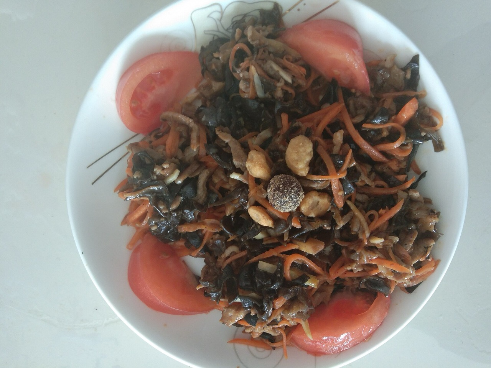
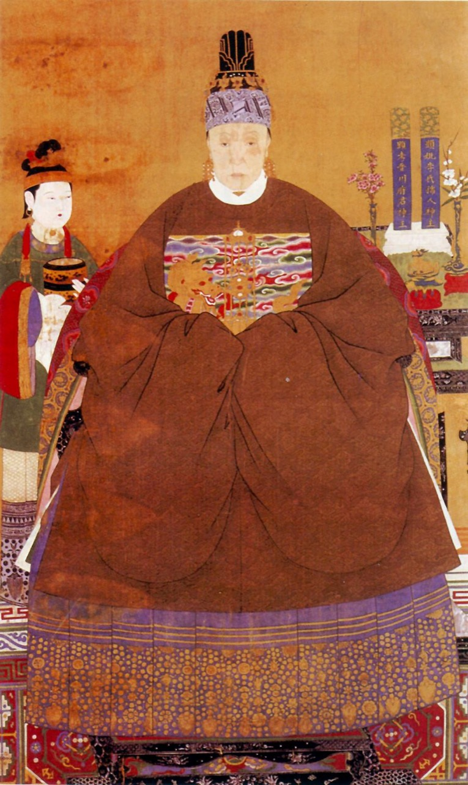
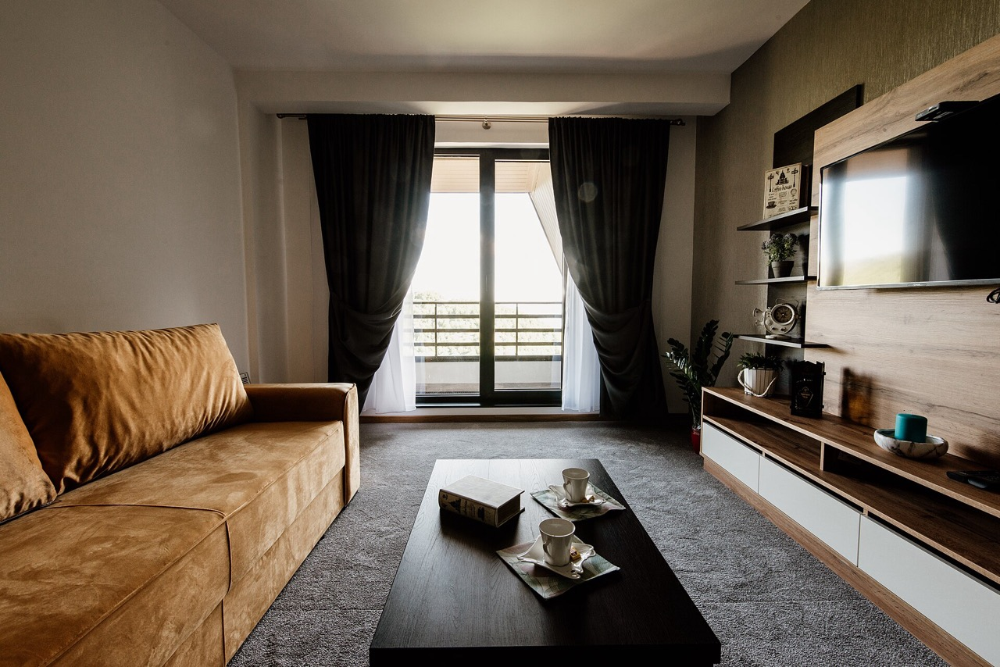
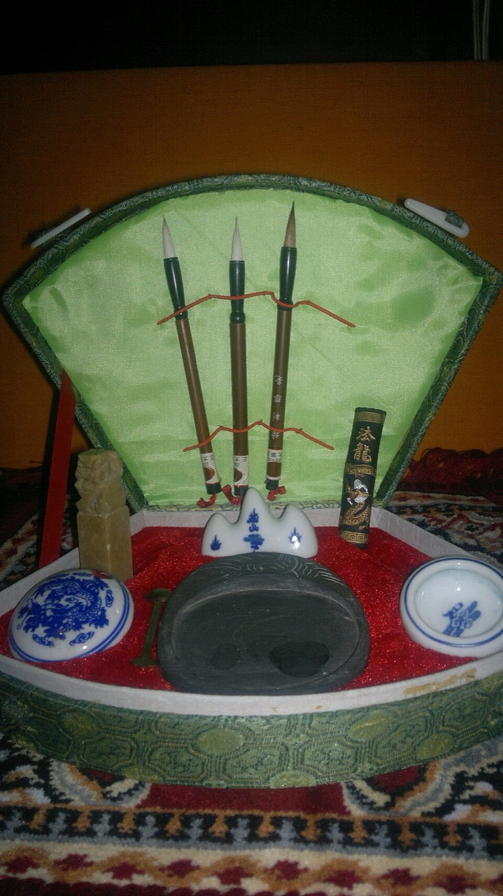

继续追剧
继续追剧
第 8 集 · 家庭生活
朝夕巷
老巷子里的柴米油盐，一段谁都绕不开的邻里情。
看到 12:36 · 共 45 分钟
继续追剧
第 8 集 · 家庭生活
老巷子里的柴米油盐，一段谁都绕不开的邻里情。
看到 12:36 · 共 45 分钟





给你的家拍一张全家福

提笔写一副自己的字
让旧时光重新清晰
说说你的老故事，替你留存
帮我找个周末能报的太极课
找着了，云栖公园周六早上有晨练太极，免费，实际距离请以地图和场地信息为准。要不要我直接替你报上？
零基础可上，跟着教练一招一式来。已报 12 人，还差 6 人开课。
顺便看看有没有好用的血压计
挑了两款适合家里用的，字大、能存测量记录。
¥199 会员价 ¥179
构图：把想拍的东西放对位置
人物放在交叉点
本周社区
义诊、理发、文艺演出陆续开场，凭社区卡即可参加。
免费量血压
每日 9:00–11:00
便民理发
周三下午 · 5 元
手机课堂
教挂号、缴费
爱心雨伞
前台自助借用
数字人讲师 · 8 节
数字人讲师 · 6 节
数字人讲师 · 10 节
晚上好，秀兰
今晚想看点什么？
继续追剧 · 第 8 集
退休以后的第一支广场舞，跳出的是热气腾腾的日子。
第 8 集 · 广场舞队成立
帮我找个周末能报的太极课
找到了，云栖公园周六早上有晨练太极，免费，步行距离待核实。要我直接替你报上吗？
顺便看看有没有好用的血压计
挑了两款字大、能存记录的，适合放家里用。
¥199 会员价 ¥179
构图：把想拍的东西放对位置
人物放在交叉点
云栖社区活动中心 · 1 号厅
本周社区
义诊、理发、文艺演出陆续开场，凭社区卡即可参加。
免费量血压
每日 9:00–11:00
便民理发
周三下午 · 5 元
手机课堂
教挂号、缴费
爱心雨伞
前台自助借用
同一批内容、同一个人的设备，两种气质：左边是「日光客厅」的明亮杂志感，右边是「暖夜剧场」的暗色沉浸感。